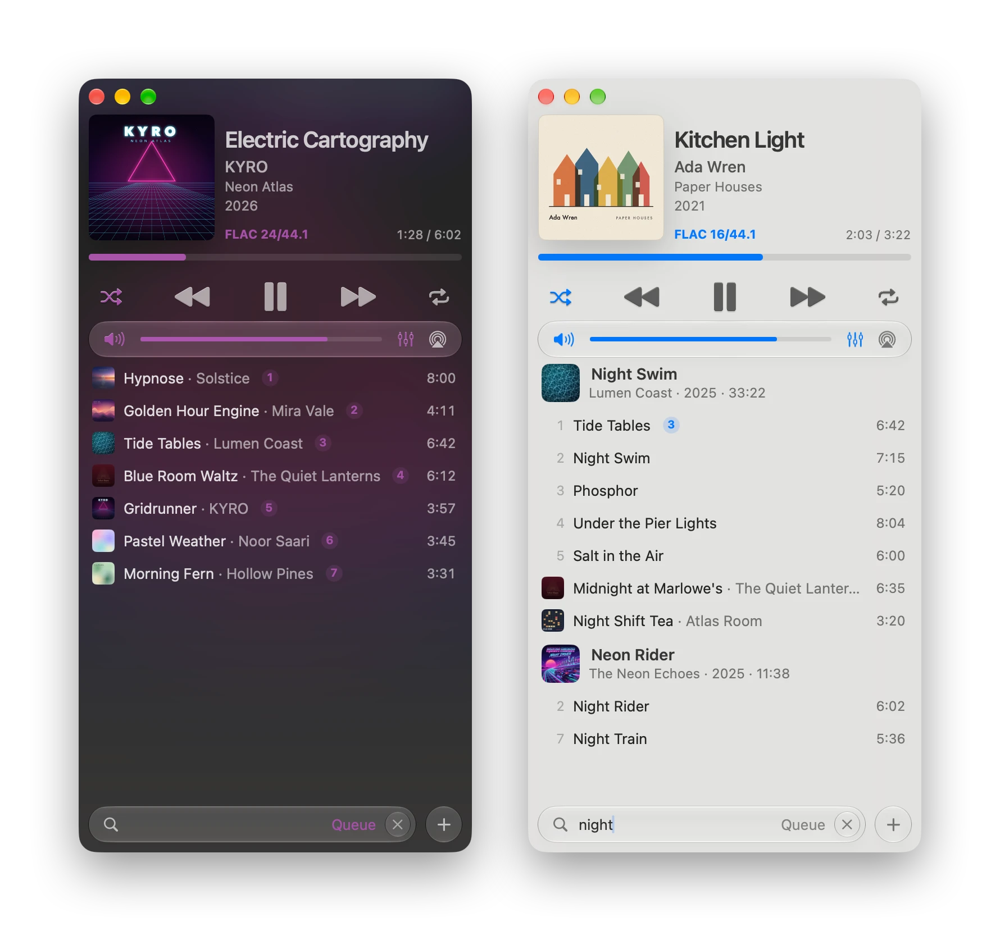

Guides › Mac
Gapless playback on a Mac: play albums without breaks
Updated November 2026
Short answer: Gapless playback means the next track starts at the exact sample where the last one ended, so live albums and DJ mixes flow without a click or a pause. The Music app does it for its own library; for FLAC, WAV and ALAC files in your folders, use a player that lines the next song up in advance, such as Airy.
Why the gap happens
Many players stop one file, open the next and start again. That takes a few milliseconds, and on an album that was recorded as one long piece you hear it: a short silence, or a click in the middle of applause or a held note.
A gapless player opens the next song before the current one ends, and feeds its first sample right after the last sample of the song before.
Albums that need it
- Live concerts, where the crowd never stops between songs.
- DJ mixes and continuous electronic albums.
- Classical works split into movements, and operas.
- Concept albums such as The Dark Side of the Moon, where songs run into each other.
Gapless with Airy
Airy plays every album gapless, with no setting to switch on: FLAC, ALAC, WAV, AIFF and MP3, and the tracks of a CUE sheet. Add the album folder and press play.

Airy for Mac
A native, lossless audio player for macOS 26 and later. Free to download, every upgrade feature free for 14 days.
Frequently asked questions
Does gapless playback need lossless files?
No, but it works best with them. MP3 and AAC files often carry a little silence from the encoder at their start and end; good players skip it, but not every file says how much there is.
Does shuffle play gapless?
Shuffle jumps between unrelated songs, so there is no gap to keep. Gapless matters when an album plays in order.